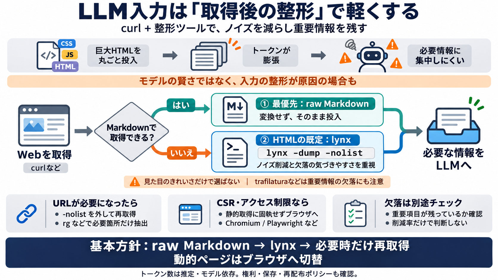

Benchmarks and evaluation — Trafilatura 2.3.1 documentation
| Python Package | Precision | Recall | Accuracy | F-Score | Time | | raw HTML | 0.519 | 0.885 | 0.535 | 0.654 | 0 | | b…

LLM入力の“軽量化”
Web参照のたびに巨大HTMLを丸ごと入れると、不要情報でトークンが膨らみ、エージェントが鈍く見える。入力生成パイプラインを最小化する実務方針を整理する。
賢さ低下の正体
巨大なHTML（CSS/JS/タグ/関連リンク等）をそのまま読み込むと、トークン消費が増えて“処理能力（賢さ）が落ちた”ように観測される。これはモデル問題ではなく、整形失敗が引き金になり得る。
入力生成の型
Web入力は「取得（curl等）→整形（テキスト/Markdown化）→コンテキスト投入」の連鎖。最初に余計な情報を削るほど、LLMの注意配分が有用箇所へ寄りやすい。
最優先ルート
サイトが Accept: text/markdown 等でMarkdownを返すなら、変換ツールよりraw markdownが最小トークンで最適になりやすい。損失が少なく“ノイズ無し”に近い。
HTML→抽出比較
raw markdownが取れない場合、HTML→テキスト変換の候補を比較し、総合的に lynx -dump -nolist をデフォルト案に採用。理由はトークン削減が大きく、見落としがサイレントに起きにくい評価に寄せたため。
“欠落”の扱い
trafilaturaは見た目の抽出がきれいでも、重要情報がサイレントに欠落し得るため相対的リスクを高く見た。運用では“ノイズより欠落の方が気づきにくい”場面がある。
コスト分割
lynx -nolistはURL情報が欠けやすい。URLが必要なときだけ nolist を外して取り直し、rg等で必要箇所だけ抽出する。
動的ページの現実
CSR（JavaScript動的ページ）やアクセス制限（Cloudflare等）は、curl/lynxの静的取得だけでは突破が難しい前提を置く。無理に粘らず、ヘッドレスブラウザへ切り替える。
比較の軸
筆者は複数ツールをバイト数・トークン数の観点で計測し、総合的に最適解を決めている。トークン削減率が大きいほど入力コストが下がる。
実務チェック
失敗を局所化しながら安定運用するため、分岐と再取得を前提に手順化する。
限界と注意
提案は実務的だが、因果の完全証明や“欠落の致命度分類”までは本文からは確定できない。導入後は損失検知（重要項目の存在チェック）を別途組み込むのが望ましい。
結論
raw markdownが取れるなら即それ。無理なら lynx -dump -nolist を安全側の既定にし、URLなど必要情報は必要時だけ再取得、CSR/ブロックはブラウザへ切替する。これで“賢さ低下”を抑えやすい。
| Python Package | Precision | Recall | Accuracy | F-Score | Time | | raw HTML | 0.519 | 0.885 | 0.535 | 0.654 | 0 | | b…
Quick Selection Guide: ## Recommendations by Scenario Still unsure which library to choose? Here is a guide based on…
1. 1\. Extraction Quality Matters: On WebMainBench, our newly constructed benchmark of 7,887 annotated web pages,…
Every task was run many times with different LLMs, agent settings, and frameworks. Too-easy tasks were removed. Tasks ma…
Built on top of vLLM for efficient LLM inference Uses Trafilatura for fallback extraction Finetuned on Hunyuan Inspir…